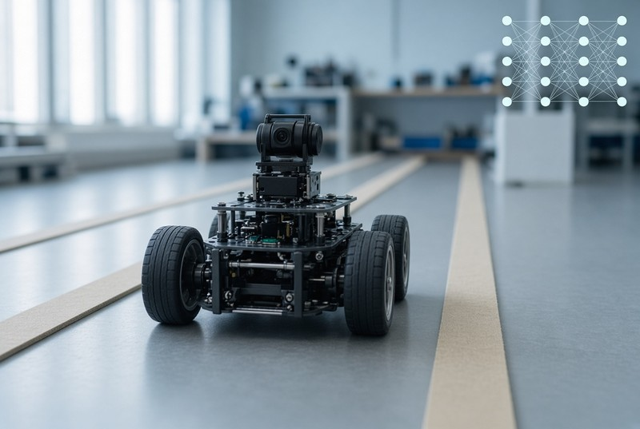

This is a university final project that used a multilayer neural network to steer a small robot car on its own, following a marked lane using pictures from a camera. I built the car's hardware — motor, servo, Raspberry Pi, camera, wireless link — and wrote the programs that collected images, trained the network with backpropagation, and used it to control steering and speed. The trained networks learned to follow two different types of track, each with a measured accuracy score showing how reliable it was.